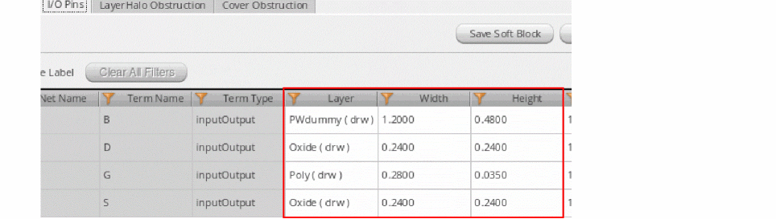
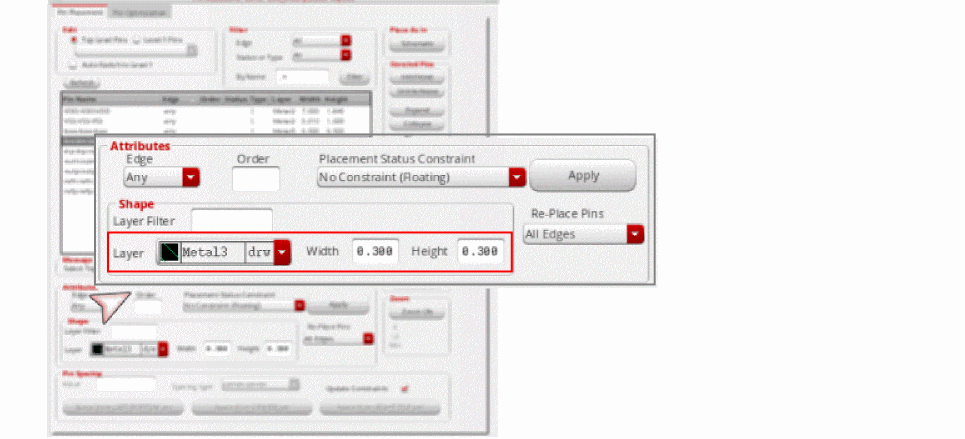

Applications supported by Net PROs
Net PRO definitions are honored by the following applications:
-
Configure Physical Hierarchy (CPH): Recognizes the net PROs defined in the schematic and displays corresponding values on the I/O Pins tab of the Soft Block Attributes pane.
The net PRO values that are read from the schematic are used for initial population of the respective fields. You can override these values manually; but you must ensure that the net PRO constraint values are not violated. - Generate Physical Hierarchy (GPH): The Generate Physical Hierarchy command generates pins in the layout as per the final values of Layer, Width, and Height specified on the I/O Pin tab.
-
Pin Planner: When a pin is selected in the pin table, the Pin Planner recognizes the corresponding net PRO and displays the values in the Layer, Width, and Height fields. See Planning Placement of Top-Level and Level-1 Pins.
You can edit these values manually, while ensuring that the net PRO constraint values are not violated. If the specified pin size is less than theminWidthdefined in the net PRO, then the pin size is reverted to its original value.
Example: The current pin width is 0.2 and net PRO specifies aminWidthof 0.3. If you change the pin width to 0.25, then the value rolls back to 0.2, which is the original value.
If the specified pin Width or Height is equal to or greater than the net PRO value, then the new value is applied.
Example: The current pin width is 0.2, and the net PRO specifies aminWidthof 0.3. If you change the pin width value to 0.4, then new value is accepted and applied.
You can continue to use Pin Planner to create and display side (alignment) constraints for pins. However, if you assign an alignment constraint to a pin that is already part of a pin group guide constraint, then an error message is displayed in the CIW. -
Pin Optimizer:
- Resizes the pins connected to the net to the minimum width specified in the net PRO. See Pin Optimization.
-
Moves pins that are connected to the net to the valid layers specified in the net PRO.
- If there is a single valid layer, then all pins on the net are re-layered to the valid layer, and the pins are placed at feasible locations to ensure minimum net length.
- If there is a list of valid layers, then the behavior depends on the state of the Respect layer priority for valid routing layers constraint on net option in the Floorplan Global Options form.
-
Applies the minimum spacing value mentioned in the net PRO to all pins in the selected net. Examples:
- If the current pin width is 0.3, and net PRO specifies a minWidth of 0.4, then the pin width is increased to 0.4.
- If the current pin width is 0.4, and net PRO specifies a minWidth of 0.3, then the pin width is not altered. This is because the net PRO constraint defines the minimum width. The current width is adhering to the minWidth requirement, and so the value remains unaltered.
Related Topics
Return to top